Chapter 5 Group Comparisons
Last week we discussed the binomial and the Poisson model, both of which are models with only one parameters. In most research, however, there are at least two parameters, and sometimes one is talking about tens or hundreds of parameters. For this week we will be looking at group comparisons done in a Bayesian way. We will start with between-group comparisons, extend it to multiple groups, and then move on to comparisons for repeated measures.
5.1 Data
We will use the data in Frank, Biberci, and Verschuere (2019), with is a replication study examining the response time (RT) for lying and whether RT is shorter or longer when lying in native language. In the original study, the researchers found that the difference between telling a lie and a truth (lie-truth difference) is smaller in English than in German for native German speakers. In the replication study, the same design was used to see whether the findings can be replicated on Dutch speakers. The data can be found at https://osf.io/x4rfk/.
Instead of looking at lie-truth difference across languages, we will start off by comparing difference in RT for telling a lie in Dutch between males (man) and females (vrouw), as the model is easier to understand for independent sample comparisons, and the model can be applied generally for between-subject experimental designs.
lies <- readxl::read_excel("../data/ENDFILE.xlsx")
# Rescale response time from ms to sec
lies <- lies %>%
mutate_at(vars(LDMRT:TEMRT), ~ . / 1000)
# Describe the data
psych::describe(lies %>% select(Age, LDMRT:TEMRT))># vars n mean sd median trimmed mad min max range skew kurtosis
># Age 1 66 23.15 7.18 21.00 21.61 2.97 18.00 61.00 43.00 2.98 10.79
># LDMRT 2 63 1.47 0.51 1.41 1.42 0.47 0.53 3.26 2.73 0.97 1.41
># TDMRT 3 63 1.16 0.43 1.09 1.10 0.35 0.51 2.94 2.43 1.54 3.27
># LEMRT 4 63 1.45 0.46 1.41 1.43 0.50 0.49 2.42 1.93 0.29 -0.80
># TEMRT 5 63 1.29 0.41 1.28 1.26 0.42 0.57 2.60 2.02 0.86 0.69
># se
># Age 0.88
># LDMRT 0.06
># TDMRT 0.05
># LEMRT 0.06
># TEMRT 0.05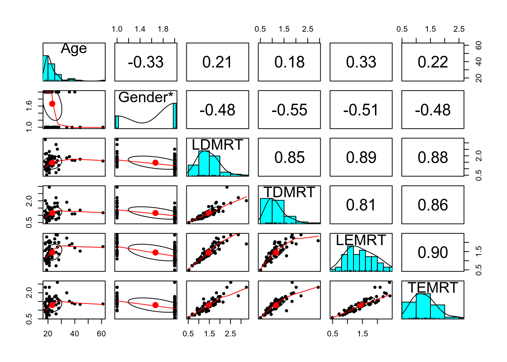
5.2 Between-Subject Comparisons
5.2.1 Plots
lies %>%
select(PP, Gender, LDMRT, TDMRT) %>%
gather(key = "veracity", value = "RT", LDMRT:TDMRT) %>%
ggplot(aes(x = RT, col = veracity)) +
geom_density(bw = "SJ") +
facet_wrap(~ Gender)># Warning: Removed 6 rows containing non-finite values (stat_density).5.2.2 Independent sample t-test
# independent t-test
t.test(lies$LDMRT[which(lies$Gender == "man")],
lies$LDMRT[which(lies$Gender == "vrouw")])>#
># Welch Two Sample t-test
>#
># data: lies$LDMRT[which(lies$Gender == "man")] and lies$LDMRT[which(lies$Gender == "vrouw")]
># t = 4, df = 34, p-value = 3e-04
># alternative hypothesis: true difference in means is not equal to 0
># 95 percent confidence interval:
># 0.255 0.778
># sample estimates:
># mean of x mean of y
># 1.81 1.305.2.3 Bayesian Normal Model
The \(t\)-test above does not directly show the underlying model. In fully Bayesian analyses, this has to be made explicit. A statistical model states the underlying assumptions of the statistical procedure. And to say more directly, a model is mostly a set of distributional assumptions. Below is the one for the \(t\)-test, including some prior choices.
\[\begin{align} \texttt{LDMRT}_{ij} & \sim \mathcal{N}^+(\mu_j, \sigma) \\ \mu_j & = \begin{cases} \mu_1, & j = 1 \\ \mu_1 + \beta, & j = 2 \end{cases} \\ \mu_1 & \sim \mathcal{N}^+(0.5, 2.5) \\ \beta & \sim \mathcal{N}(0, 2.5) \\ \sigma & \sim t^+(4, 0, 1) \end{align}\]
Parameters:
- \(\mu_j\): mean parameter for the \(j\)th group where \(j\) = 1 for man and \(j\) = 2 for vrouw
- \(\sigma\): standard deviation parameter that’s assumed the same across the two gender groups
- \(\beta\): mean difference between the two genders
Transformed parameters:
- \(\mu_2\)
The above prior distributions are called weakly informative. They are informative because it does give some informative on what the most likely value is for each parameter prior to looking at the data, such as 0.5 for \(\mu_1\). On the other hand, it is weak because the most likely values are basically covering all values that are reasonable. For example, a normal prior with a mean 0 and an SD of 2.5 for \(\beta\) represents a belief that the difference in RT between males and females has a 68% chance to be no more than 2.5 seconds. Given that most people took just no more than two seconds to respond, this is a pretty weak prior.
For \(\sigma\), its lower bound is 0. The prior used here is a half-\(t\) distribution based on Gelman (2006). You may find this guide: https://github.com/stan-dev/stan/wiki/Prior-Choice-Recommendations to be useful when choosing priors for a lot of the models we will discuss in this course.
Below are the graphs for the three priors:
p1 <- ggplot(tibble(mu = c(0, 5)), aes(x = mu)) +
stat_function(fun = function(x) dnorm(x, mean = 0.5, sd = 2.5) /
(1 - pnorm(0, 0.5, sd = 2.5))) +
labs(x = expression(mu), y = "Density")
p2 <- ggplot(tibble(beta = c(-5, 5)), aes(x = beta)) +
stat_function(fun = dnorm, args = list(mean = 0, sd = 2.5)) +
labs(x = expression(beta), y = "Density")
p3 <- ggplot(tibble(sig = c(0, 5)), aes(x = sig)) +
stat_function(fun = function(x) dt(x, df = 2) * 2) +
labs(x = expression(sigma), y = "Density")
gridExtra::grid.arrange(p1, p2, p3, nrow = 2)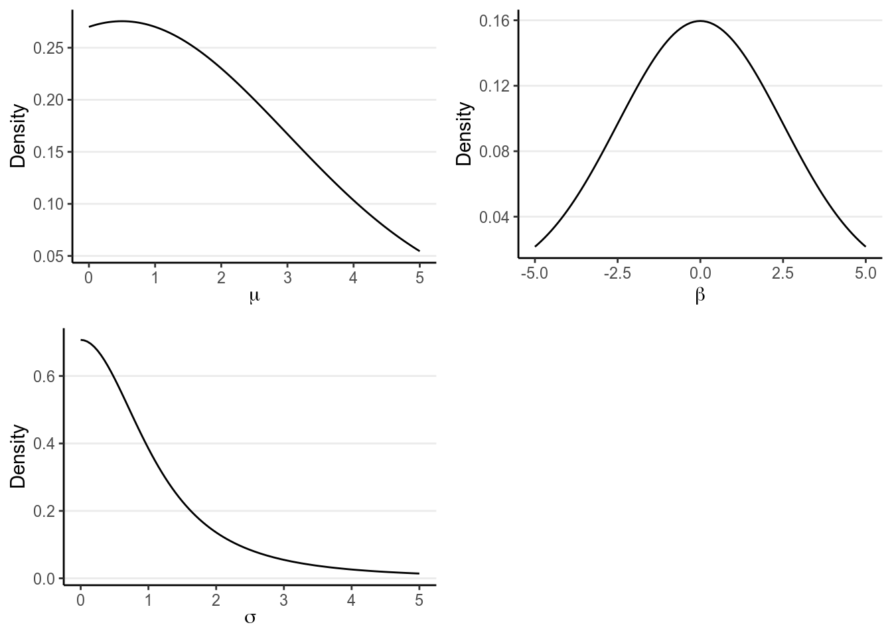
5.2.3.1 Model Diagram
5.2.3.2 STAN
Below is the STAN code for the model:
data {
int<lower=0> N1; // number of observations (group 1)
int<lower=0> N2; // number of observations (group 2)
vector[N1] y1; // response time (group 1);
vector[N2] y2; // response time (group 2);
}
parameters {
real<lower=0> mu_1; // mean of group 1
real beta; // difference in means
real<lower=0> sigma; // pooled standard deviation
}
transformed parameters {
real<lower=0> mu_2 = mu_1 + beta;
}
model {
y1 ~ normal(mu_1, sigma);
y2 ~ normal(mu_2, sigma);
// prior
mu_1 ~ normal(0.5, 2.5);
beta ~ normal(0, 2.5);
sigma ~ student_t(4, 0, 1);
}
generated quantities {
real y1rep[N1];
real y2rep[N2];
for (i in 1:N1) {
y1rep[i] = normal_rng(mu_1, sigma);
}
for (i in 1:N2) {
y2rep[i] = normal_rng(mu_2, sigma);
}
}And let’s fit the model with rstan.
library(rstan)
rstan_options(auto_write = TRUE)
# Exclude missing values
lies_cc <- drop_na(lies, LDMRT)m1 <- stan("../codes/group_comparison.stan",
data = list(N1 = sum(lies_cc$Gender == "man"),
N2 = sum(lies_cc$Gender == "vrouw"),
y1 = lies_cc$LDMRT[which(lies_cc$Gender == "man")],
y2 = lies_cc$LDMRT[which(lies_cc$Gender == "vrouw")]))# Use the `broom` package to generate nicely formatted table
broom::tidy(m1, pars = c("mu_1", "mu_2", "beta", "sigma"),
conf.int = TRUE, conf.method = "quantile")># # A tibble: 4 x 5
># term estimate std.error conf.low conf.high
># <chr> <dbl> <dbl> <dbl> <dbl>
># 1 mu_1 1.81 0.0999 1.61 2.00
># 2 mu_2 1.30 0.0724 1.15 1.44
># 3 beta -0.511 0.125 -0.759 -0.265
># 4 sigma 0.463 0.0427 0.388 0.557># ci_level: 0.8 (80% intervals)># outer_level: 0.95 (95% intervals)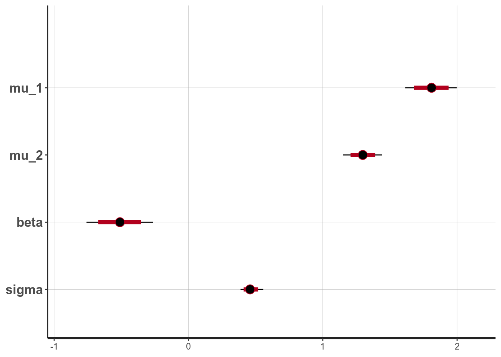
5.2.3.3 Effect size
For mean comparisons, it is also common to report a standardized effect size. For example, Cohen’s \(d\) was defined as: \[d = \frac{\mu_2 - \mu_1}{\sigma}\]
We can directly put that in the STAN code for generated quantities, such as
generated quantities {
real cohen_d = (mu_2 - mu_1) / sigma;
}However, if you have already run STAN, like what we did here, we can easily
compute the effect size using the posterior samples of beta and sigma, as
explained in the code below:
# Extract posterior samples of the beta and the sigma parameters
post_sam <- as.data.frame(m1, pars = c("beta", "sigma"))
# Compute Cohen's d for each iteration
post_sam$cohen_d <- post_sam$beta / post_sam$sigma
# Posterior density
bayesplot::mcmc_areas(post_sam, pars = "cohen_d",
prob = .90)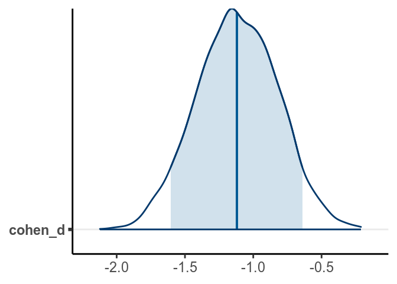
># lower upper
># beta -0.756 -0.264
># sigma 0.379 0.544
># cohen_d -1.709 -0.563
># attr(,"Probability")
># [1] 0.95From the normal model, it was estimated that the mean RT for man was 1.809 seconds, 95% CI [1.614, 1.997]. On average women had faster RT when asked to tell lies in Dutch than man, with an estimated difference of -0.511 seconds, 95% CI [-0.759, -0.265], d = -1.116, 95% CI [-1.697, -0.546].
5.2.3.4 Posterior Predictive Check
Let’s check whether the model works well. First look at the shape of the data:
library(bayesplot)
# Observed data
y1 <- lies_cc$LDMRT[which(lies_cc$Gender == "man")]
y2 <- lies_cc$LDMRT[which(lies_cc$Gender == "vrouw")]
# Replicated data (randomly sampling 100)
y1rep <- as.matrix(m1, pars = "y1rep")[sample.int(2000, 100), ]
y2rep <- as.matrix(m1, pars = "y2rep")[sample.int(2000, 100), ]
ppc_dens_overlay(y1, yrep = y1rep)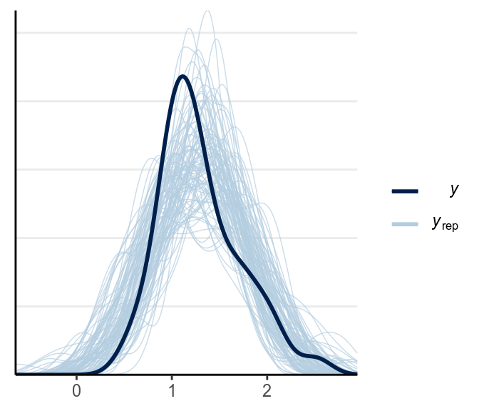
The main problem is that the predictions can be negative, which isn’t possible for response time. Below is a check for outliers:
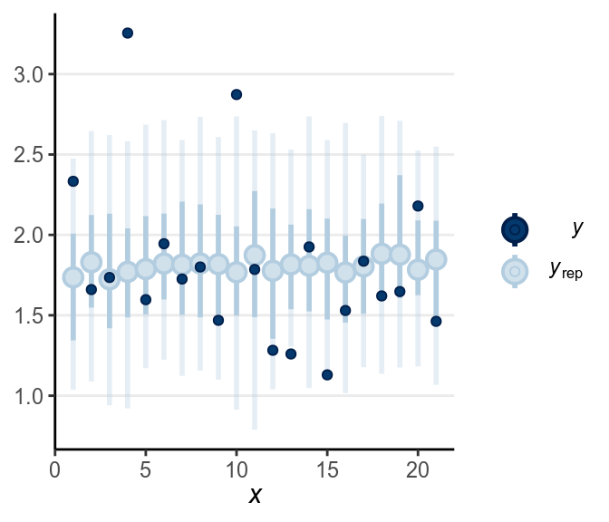
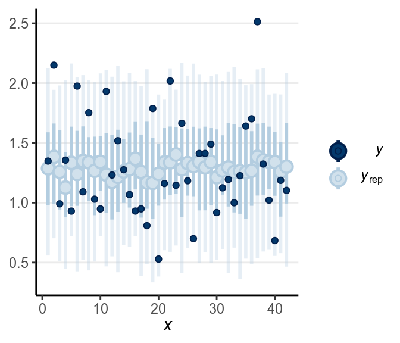
When the dark blue dots were outside of the intervals (which were the intervals of predicted value), it indicates that the model didn’t account for those values well. The intervals were 90% predictive intervals, so you should expect less than 10% of data points to be outside of the intervals. There were not a lot of unfitted data points to the model in this example.
5.2.4 Robust Model
A robust Bayesian version of the \(t\) test can accommodate unequal standard deviations as well as outliers, by replacing the normal likelihood with a Student’s \(t\) likelihood. See homework instruction. We will talk more about this in a later week after we discuss regression.
data {
int<lower=0> N1; // number of observations (group 1)
int<lower=0> N2; // number of observations (group 2)
vector[N1] y1; // response time (group 1);
vector[N2] y2; // response time (group 2);
}
parameters {
real<lower=0> mu_1; // mean of group 1
real beta; // difference in means
real lsigma_1; // log of scale parameter for group 1
real beta_lsigma; // difference in log standard deviation
real<lower=1> nu; // degrees of freedom of student's t distribution
}
transformed parameters {
real<lower=0> mu_2 = mu_1 + beta;
real<lower=0> sigma_1 = exp(lsigma_1);
real<lower=0> sigma_2 = exp(lsigma_1 + beta_lsigma);
}
model {
y1 ~ student_t(nu, mu_1, sigma_1);
y2 ~ student_t(nu, mu_2, sigma_2);
// prior
mu_1 ~ normal(0.5, 2.5);
beta ~ normal(0, 2.5);
lsigma_1 ~ student_t(4, 0, 1);
beta_lsigma ~ std_normal();
nu ~ gamma(2, 0.1);
}
generated quantities {
real sigma_ratio = sigma_2 / sigma_1;
real y1rep[N1];
real y2rep[N2];
for (i in 1:N1) {
y1rep[i] = student_t_rng(nu, mu_1, sigma_1);
}
for (i in 1:N2) {
y2rep[i] = student_t_rng(nu, mu_2, sigma_2);
}
}5.2.5 Shifted Lognormal Model*
With Bayesian analyses, you’re not limited to just the usual \(t\)-test, but you can potentially extract more information by modeling the distribution of the data. One possible choice is the shifted lognormal model (see Heathcote, Brown, and Cousineau 2004), which assumes that there are two components in the response time: (a) decision time component that follows a log-normal distribution, and (b) non-decision time component due to processing of stimuli. I won’t get into the detail of the model, but instead wanted to show you several shifted lognormal distributions and the codes for running it on our example.
5.2.5.1 Shifted Lognormal Distributions
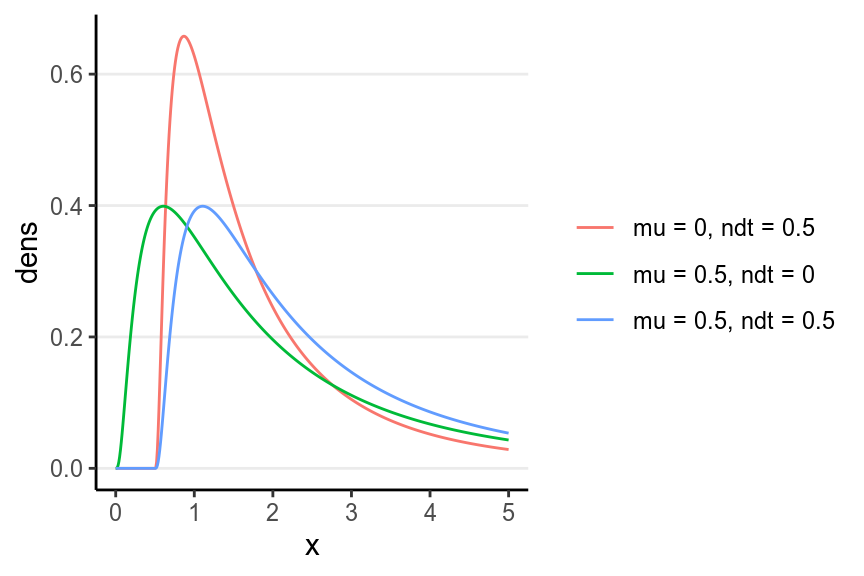
5.2.5.2 STAN
data {
int<lower=0> N1; // number of observations (group 1)
int<lower=0> N2; // number of observations (group 2)
vector<lower=0>[N1] y1; // response time (group 1);
vector<lower=0>[N2] y2; // response time (group 2);
}
parameters {
real mu_1; // mean of group 1 for the Gaussian component
real beta_mu; // difference in means for the Gaussian component
real<lower=0> sigma; // pooled standard deviation
real lndt_1; // log of non-decision time for group 1
real beta_lndt; // difference in ndt
}
transformed parameters {
real mu_2 = mu_1 + beta_mu;
real<lower=0> ndt_1 = exp(lndt_1);
real<lower=0> ndt_2 = exp(lndt_1 + beta_lndt);
}
model {
target += lognormal_lpdf(y1 - ndt_1 | mu_1, sigma);
target += lognormal_lpdf(y2 - ndt_2 | mu_2, sigma);
target += std_normal_lpdf(mu_1);
target += std_normal_lpdf(beta_mu);
target += student_t_lpdf(sigma | 4, 0, 1) -
student_t_lccdf(0 | 4, 0, 1);
target += std_normal_lpdf(lndt_1);
target += std_normal_lpdf(beta_lndt);
}
generated quantities {
real<lower=0> y1rep[N1];
real<lower=0> y2rep[N2];
for (i in 1:N1) {
y1rep[i] = lognormal_rng(mu_1, sigma) + ndt_1;
}
for (i in 1:N2) {
y2rep[i] = lognormal_rng(mu_2, sigma) + ndt_2;
}
}m3 <- stan("../codes/group_comparison_shifted_lognormal.stan",
data = list(N1 = sum(lies_cc$Gender == "man"),
N2 = sum(lies_cc$Gender == "vrouw"),
y1 = lies_cc$LDMRT[which(lies_cc$Gender == "man")],
y2 = lies_cc$LDMRT[which(lies_cc$Gender == "vrouw")]),
control = list(adapt_delta = .999,
max_treedepth = 12))broom::tidy(m3, pars = c("mu_1", "mu_2", "beta_mu", "sigma",
"ndt_1", "ndt_2"),
conf.int = TRUE,
conf.method = "HPDinterval") %>% # Just to demonstrate HPDI
knitr::kable(digits = 2) # round to two digits| term | estimate | std.error | conf.low | conf.high |
|---|---|---|---|---|
| mu_1 | 0.15 | 0.21 | -0.25 | 0.54 |
| mu_2 | 0.03 | 0.12 | -0.21 | 0.24 |
| beta_mu | -0.12 | 0.19 | -0.48 | 0.26 |
| sigma | 0.40 | 0.06 | 0.30 | 0.52 |
| ndt_1 | 0.54 | 0.21 | 0.14 | 0.91 |
| ndt_2 | 0.18 | 0.09 | 0.02 | 0.36 |
5.2.5.3 Difference in \(\mu\) and in ndt
# Extract posterior samples of the mu, sigma, and ndt parameters
post_sam <- as.data.frame(m3,
pars = c("mu_1", "mu_2", "sigma", "ndt_1", "ndt_2"))
# Compute means of decision components for each iteration
post_sam$dt_1 <- exp(post_sam$mu_1 + post_sam$sigma^2 / 2)
post_sam$dt_2 <- exp(post_sam$mu_2 + post_sam$sigma^2 / 2)
post_sam$dt_diff <- post_sam$dt_2 - post_sam$dt_1
# Compute difference for ndt
post_sam$ndt_diff <- post_sam$ndt_2 - post_sam$ndt_1
# Posterior density
bayesplot::mcmc_areas(post_sam, pars = c("dt_diff", "ndt_diff"),
prob = .90)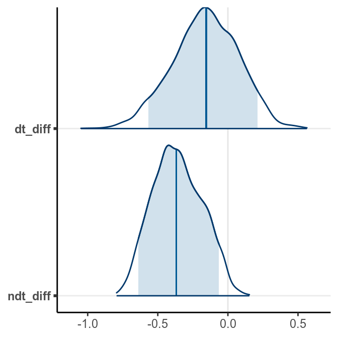
5.2.5.4 Posterior Predictive Check
Let’s check whether the model works well. First look at the shape of the data:
# Replicated data (randomly sampling 100)
y1rep <- as.matrix(m3, pars = "y1rep")[sample.int(2000, 100), ]
y2rep <- as.matrix(m3, pars = "y2rep")[sample.int(2000, 100), ]
ppc_dens_overlay(y1, yrep = y1rep)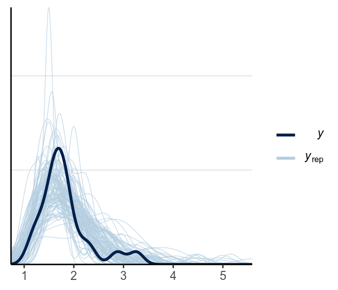
The above looks pretty good.
Below is a check for outliers:
There are still quite a handful of outliers.
5.3 Notes on Model Comparison
In this note there are three models presented. Each of them have different interpretations. The big question is, of course, which one is better. It’s not an easy question to answer, but the choice should be ideally driven by substantive theories on how the data are generated. The posterior predictive check should also be use to see whether the models would yield data that are similar to the observed ones. Finally, There are also some useful statistical tools we can use to compare the different models, which we will discuss when we get to model comparisons.
5.4 Within-Subject Comparisons
Our research question this time is whether RT is longer for lies than for truth in Dutch (native language)
5.4.1 Plots
lies %>%
select(PP, Gender, LDMRT, TDMRT) %>%
gather(key = "veracity", value = "RT", LDMRT:TDMRT) %>%
ggplot(aes(x = RT, col = veracity)) +
geom_density(bw = "SJ")># Warning: Removed 6 rows containing non-finite values (stat_density).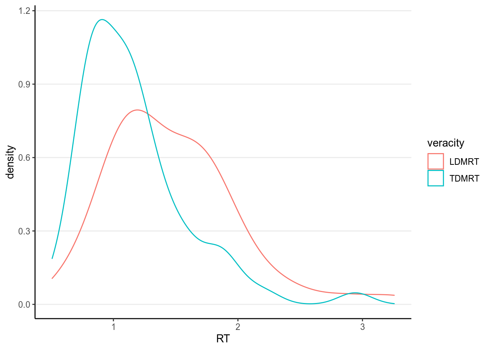
5.4.2 Independent sample \(t\)-test
>#
># Paired t-test
>#
># data: lies$TDMRT and lies$LDMRT
># t = -9, df = 62, p-value = 5e-13
># alternative hypothesis: true difference in means is not equal to 0
># 95 percent confidence interval:
># -0.376 -0.240
># sample estimates:
># mean of the differences
># -0.3085.4.3 Bayesian Normal Model
\[\begin{align} \mathtt{TDMRT}_{i} & \sim \mathcal{N}^+(\mu_1 + u_i, \sigma) \\ \mathtt{LDMRT}_{i} & \sim \mathcal{N}^+(\mu_2 + u_i, \sigma) \\ \mu_2 & = \mu_1 + \beta \\ \mu_1 & \sim \mathcal{N}^+(0.5, 2.5) \\ \beta & \sim \mathcal{N}(0, 2.5) \\ \sigma & \sim t^+(4, 0, 2.5) \\ u_i & \sim \mathcal{N}(0, \tau) \\ \tau & \sim t^+(4, 0, 2.5) \end{align}\]
Parameters:
- \(\mu_1\): mean parameter for RT for truth
- \(\beta\): mean difference between the two genders
- \(\log(\sigma_1)\): natural logarithm of the standard deviation parameter for RT for truth
- \(\beta_{\log(\sigma)}\): difference in log(SD) for RT between truth and lies
- \(u_1\), \(\ldots\), \(u_{63}\): individual difference nuisance parameters
- \(\tau\): standard deviation of individual differences
Transformed parameters:
- \(\sigma\), \(\sigma_2\)
- \(\mu_2\)
This is an example of a hierarchical model. Note that the priors for the \(u\)s are \(\mathcal{N}(0, \tau)\), which has another parameter on it. In this case, we’re letting the data to update our belief on how much individual difference there is. The parameter here, \(\tau\), is called a hyperparameter, and this kind of prior is called a hierarchical prior.
5.4.3.1 STAN
Below is the STAN code for the model:
data {
int<lower=0> N; // number of observations
vector[N] y1; // response time (repeated measure 1);
vector[N] y2; // response time (repeated measure 2);
}
parameters {
real<lower=0> mu_1; // mean of group 1
real beta; // difference in means
real<lower=0> sigma; // residual SD
vector[N] zu; // individual difference parameters (scaled)
real<lower=0> tau; // standard deviation of indivdiual difference
}
transformed parameters {
real<lower=0> mu_2 = mu_1 + beta;
vector[N] u = zu * tau;
}
model {
y1 ~ normal(mu_1 + u, sigma);
y2 ~ normal(mu_2 + u, sigma);
// prior
mu_1 ~ normal(0.5, 2.5);
beta ~ normal(0, 2.5);
sigma ~ student_t(4, 0, 2.5);
zu ~ std_normal();
// hyperprior
tau ~ student_t(4, 0, 2.5);
}
generated quantities {
real y1rep[N];
real y2rep[N];
real cohen_d = (mu_2 - mu_1) / sqrt(sigma^2 + tau^2);
for (i in 1:N) {
y1rep[i] = normal_rng(mu_1 + u[i], sigma);
y2rep[i] = normal_rng(mu_2 + u[i], sigma);
}
}And let’s fit the model with rstan.
m4 <- stan("../codes/group_comparison_paired.stan",
data = list(N = 63,
y1 = lies_cc$TDMRT,
y2 = lies_cc$LDMRT),
pars = "zu", include = FALSE, seed = 104134)You might receive a warning from rstan from the above code. Don’t ignore
those. Generally, when STAN shows a warning it usually indicates that the
results are not trustworthy.
5.4.3.2 Effect size
For repeated measures, there were several different ways to define effect size. To make it consistent with the between-subject comparison, Cohen’s \(d\) was defined as: \[d = \frac{\mu_2 - \mu_1}{\sqrt{\sigma^2 + \tau^2}}\]
This time we directly put that in the STAN code for generated quantities.
generated quantities {
real cohen_d = (mu_2 - mu_1) / sqrt(sigma^2 + tau^2);
}# Use the `broom` package to generate nicely formatted table
broom::tidy(m4, pars = c("mu_1", "mu_2", "beta", "sigma", "tau", "cohen_d"),
conf.int = TRUE, conf.method = "quantile")># # A tibble: 6 x 5
># term estimate std.error conf.low conf.high
># <chr> <dbl> <dbl> <dbl> <dbl>
># 1 mu_1 1.16 0.0604 1.04 1.28
># 2 mu_2 1.47 0.0606 1.35 1.59
># 3 beta 0.308 0.0346 0.240 0.377
># 4 sigma 0.194 0.0177 0.163 0.233
># 5 tau 0.441 0.0453 0.364 0.539
># 6 cohen_d 0.644 0.0906 0.471 0.828># ci_level: 0.8 (80% intervals)># outer_level: 0.95 (95% intervals)From the normal model, it was estimated that the mean RT for truth was 1.159 seconds, 95% CI [1.040, 1.279]. On average women had faster RT when asked to tell lies in Dutch than man, with an estimated difference of 0.308 seconds, 95% CI [0.240, 0.377], d = 0.644, 95% CI [0.471, 0.828].
5.4.3.3 Posterior Predictive Check
Let’s check whether the model works well. First look at the shape of the data:
library(bayesplot)
# Observed data
y1 <- lies_cc$TDMRT
y2 <- lies_cc$LDMRT
# Replicated data (randomly sampling 100)
y1rep <- as.matrix(m4, pars = "y1rep")[sample.int(2000, 100), ]
y2rep <- as.matrix(m4, pars = "y2rep")[sample.int(2000, 100), ]
ppc_dens_overlay(y1, yrep = y1rep)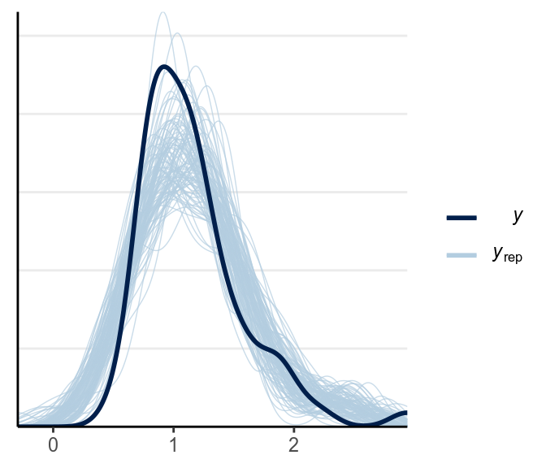
The fit was good for lies but not for truth. Below is a check for outliers:
As discussed in the previous note, you may want to consider some alternative models, maybe the Student’s \(t\) likelihood that accommodate outliers, or some response time models like the shifted lognormal model. I encourage you to modify the STAN code and try things out!
5.4.4 Using brms*
Finally, one thing to mention is that many of the commonly used models have been
implemented in the R package brms. I decided to talk about STAN first because
it is the underlying engine and can fit almost any parametric models, but in
practice I do use brms a lot. I will show you the brms code for a majority
of the models moving forward. For example, here is one for the repeated
measure comparison above, with a Student’s \(t\) likelihood. It does require
restructuring the data first.
library(brms)
lies_long <- lies %>%
select(PP, Gender, LDMRT, TDMRT) %>%
gather(key = "veracity", value = "RT", LDMRT:TDMRT)
m2_brm <- brm(RT ~ veracity + (1 | PP), data = lies_long,
family = student(),
prior = c(prior(normal(0, 1), class = "b"),
prior(student_t(4, 0, 2.5), class = "sd"),
prior(student_t(4, 0, 2.5), class = "sigma")))># Warning: Rows containing NAs were excluded from the model.># Warning: Bulk Effective Samples Size (ESS) is too low, indicating posterior means and medians may be unreliable.
># Running the chains for more iterations may help. See
># http://mc-stan.org/misc/warnings.html#bulk-essAnd there are some nice functions you can use to summarize models fitted by
brms
># Family: student
># Links: mu = identity; sigma = identity; nu = identity
># Formula: RT ~ veracity + (1 | PP)
># Data: lies_long (Number of observations: 126)
># Samples: 4 chains, each with iter = 2000; warmup = 1000; thin = 1;
># total post-warmup samples = 4000
>#
># Group-Level Effects:
># ~PP (Number of levels: 63)
># Estimate Est.Error l-95% CI u-95% CI Rhat Bulk_ESS Tail_ESS
># sd(Intercept) 0.41 0.04 0.34 0.50 1.01 732 1417
>#
># Population-Level Effects:
># Estimate Est.Error l-95% CI u-95% CI Rhat Bulk_ESS Tail_ESS
># Intercept 1.45 0.06 1.33 1.56 1.01 361 801
># veracityTDMRT -0.30 0.03 -0.36 -0.24 1.00 4341 2787
>#
># Family Specific Parameters:
># Estimate Est.Error l-95% CI u-95% CI Rhat Bulk_ESS Tail_ESS
># sigma 0.14 0.02 0.10 0.19 1.00 1110 1694
># nu 5.75 4.77 2.08 19.49 1.00 1603 1783
>#
># Samples were drawn using sampling(NUTS). For each parameter, Bulk_ESS
># and Tail_ESS are effective sample size measures, and Rhat is the potential
># scale reduction factor on split chains (at convergence, Rhat = 1).From above, as the estimate of \(\nu\) was quite small, it was pretty clear that there are outliers that need to be handled (and was handled somewhat by the robust Student’s \(t\) model). Let’s look at some posterior predictive checks:
># Using all posterior samples for ppc type 'intervals_grouped' by default.5.4.5 Region of Practical Equivalence (ROPE)
One thing that is often of interest in research is to establish equivalence between two values. For example, we may wonder, for example,
- whether an experimental manipulation has an effect size of zero (\(d\) = 0),
- whether two variables are truly uncorrelated (\(r\) = 0),
- whether the blood type distribution is the same across countires (see some examples here)
- whether two parallel forms of a test have the same difficulty level
In this example, we can investigate, for example,
Whether lying in native and in second languages requires the same response time.
In all these above scenarios, we are interested in “confirming” whether a quantity is equal to another quantity. The traditional null hypothesis significance testing (NHST), however, won’t allow us to do that. That’s because NHST is set up to reject the null hypothesis, but failure to reject \(d\) = 0 does not confirm that \(d\) = 0; it just means that we don’t have enough evidence for that. In addition, we know in advance, with high degree of certainty, that \(d\) \(\neq\) 0. Do we truly believe that the treatment group and the control group will perform exactly the same on an IQ test? Even when one group got 100 and the other group 100.0000001, the null hypothesis is false.
Therefore, what we really meant when saying whether two things are equal is not that whether two quantities are exactly the same, which is basically impossible, but instead whether two quantities are close enough, or practically equivalent. In the IQ test example, most of us would agree that the two groups are practically equivalent.
So what we actually want to test, in mathematically notation, is \[|\beta - \beta_0| < \epsilon,\] where \(\beta\) is the parameter of interest (in this case the difference in RT between lying in Dutch and lying in English), \(\beta_0\) is the value we wanted to compare \(\beta\) to (in this case 0), and \(\epsilon\) is some small value of a difference by which \(\beta\) and \(\beta_0\) are deemed practically equivalent. For example, in our analysis we may think that if the difference is less than .05 seconds (or 50ms), we may say that there are no difference in RT. In other words, if there is a high probability (in a Bayesian sense) that \[-\epsilon < \beta < \epsilon\] than we considered there is sufficient evident that \(\beta\) = \(\beta_0\) in a practical sense. The interval (\(-\epsilon\), \(\epsilon\)) is what Kruschke (2013) referred to as the region of practical equivalence, or ROPE.
Using brms, we run a model comparing the means of LDMRT and LEMRT:
library(brms)
lies_long <- lies %>%
select(PP, Gender, LDMRT, LEMRT) %>%
gather(key = "language", value = "RT", LDMRT, LEMRT)
m3_brm <- brm(RT ~ language + (1 | PP), data = lies_long,
family = student(),
prior = c(prior(normal(0, 1), class = "b"),
prior(student_t(4, 0, 2.5), class = "sd"),
prior(student_t(4, 0, 2.5), class = "sigma")),
iter = 4000)># Warning: Rows containing NAs were excluded from the model.As you can see, the 95% CI of \(\beta\) is
># 2.5% 97.5%
># b_languageLEMRT -0.0405 0.0399So we can see that the 95% CI is completely inside the ROPE. Therefore, we would say:
There is > 95% chance that the mean RT of lying is practically the same in Dutch and in English
You can also check the probability that \(\beta\) is inside the ROPE:
# Extract posterior samples
beta_sam <- as.matrix(m3_brm, pars = "b_languageLEMRT")
# Probability in the ROPE
mean(beta_sam < .05 & beta_sam > -.05)># [1] 0.982which shows that there is a mean(beta_sam < .05 & beta_sam > -.05) * 100%
chance that the mean RT of lying is practically the same in Dutch and in
English.
You can do the same in frequentist with equivalence testing (see https://daniellakens.blogspot.com/2017/02/rope-and-equivalence-testing.html), but I found ROPE to be more scalable to other types of models, plus you’ll obtain a posterior interval anyway with Bayesian analyses.
References
Frank, Avi, Sena Biberci, and Bruno Verschuere. 2019. “The language of lies: a preregistered direct replication of Suchotzki and Gamer (2018; Experiment 2).” Cognition and Emotion 33 (6): 1310–5. https://doi.org/10.1080/02699931.2018.1553148.
Gelman, Andrew. 2006. “Prior distributions for variance parameters in hierarchical models (Comment on Article by Browne and Draper).” Bayesian Analysis 1 (3): 515–34. https://doi.org/10.1214/06-BA117A.
Heathcote, Andrew, Scott Brown, and Denis Cousineau. 2004. “QMPE: Estimating Lognormal, Wald, and Weibull Rt Distributions with a Parameter-Dependent Lower Bound.” Behavior Research Methods, Instruments, & Computers 36 (2): 277–90.
Kruschke, John K. 2013. “Bayesian estimation supersedes the t test.” Journal of Experimental Psychology: General 142 (2): 573–603. https://doi.org/10.1037/a0029146.